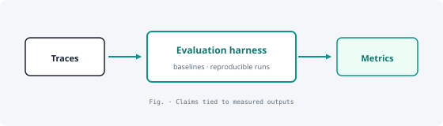

Runtime verification for PLCs
Safe program units need online checks without taking lines down. Built an RV stack evaluated on controller-style workloads; outcome — DSN 2025 paper + trace-backed evaluation.
PhD work: close the gap between what controllers should do and what you can observe at runtime—with specs, monitors, and published evaluations.
Controllers fail quietly if monitors drift from certified behaviour—so specs, RV monitors, and ST→C bridges must earn their keep in experiments or in print (DSN, CEUR).
Safe program units need online checks without taking lines down. Built an RV stack evaluated on controller-style workloads; outcome — DSN 2025 paper + trace-backed evaluation.

Temporal logics rarely ship inside vendor IDEs. Delivered C-centric specs, ST→C transpilation, and integration hooks; outcome — partners run verification paths, not just read them.

RL rewards often hide whether intent was met. Shipped RMLGym (reward machines × Gym APIs); outcome — CEUR paper, explicit objectives per run — see publications.

RV claims need logs and baselines, not adjectives. Built harnesses + literature-grounded comparisons; outcome — claims scoped to measured workloads only.